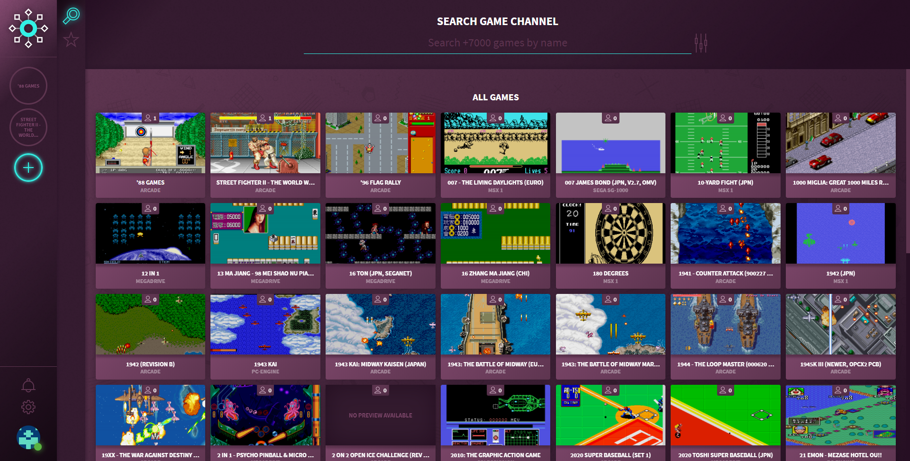
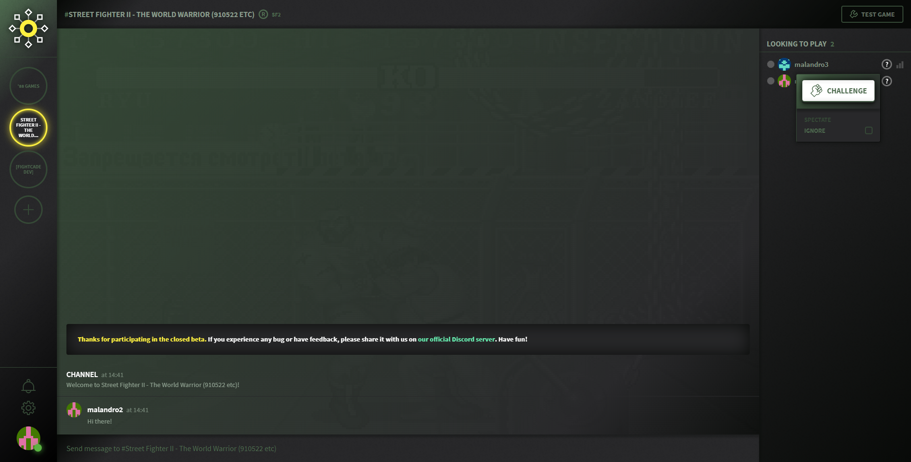
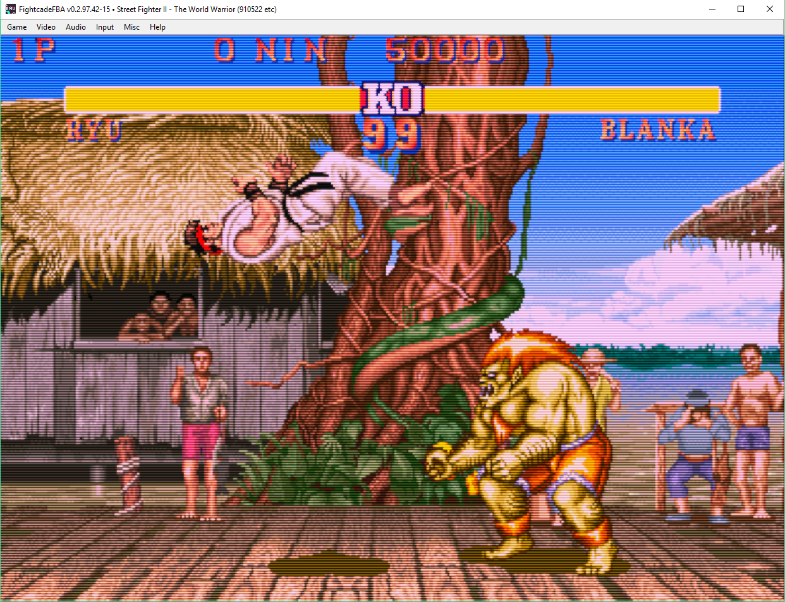

OVERVIEW
Fightcade is a network gaming platform for retro games. It is composed of several parts:
THE FRONT-END
I've done all the programming of the front-end and I've used Vue.js for it. This was my first project with Vue.js. Some time ago I read an article about Vue.js and it looked very cool to me. Just a bit later I started to collaborate in Fightcade, so I took advantage of this situation to use Vue.js in a real project, and I'm very happy with that decision because I really like it. When I started, what I basically did, was copy the interface of Discord, but after some time Jorge Fuentes started to collaborate as a designer and he implemented most of the HTTP layout and all the CSS.
Every supported game in Fightcade has its own channel. You can search for a game based on its name, year, genre, etc.  A channel is a space where you can chat with other people interested in that game, challenge them or spectate other matches. 
THE BACK-END
It's done in Node.js. I did a really small part of it, basically bug fixing and adding small features. In addition to this, we have a hole punching to enable the P2P connection for peers behind firewalls or routers that use NAT.
THE EMULATORS
When a user challenges another user, the emulator is launched and they can play together. So far, we support two emulators:
FB Alpha: to play arcade machines and Megadrive games. We've done a lot of improvements to the base emulator. I've added different shaders for CRT effect.
snes9x: to play super Nintendo games. We have added this emulator very recently, so it doesn't have the same features that the FBA emulator. I've added GGPO support to play online P2P.
